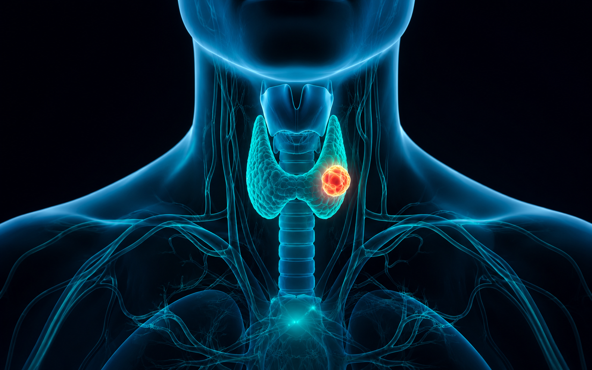
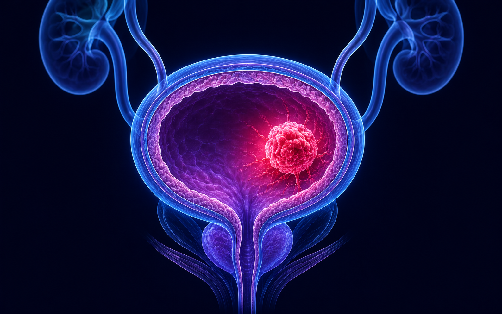
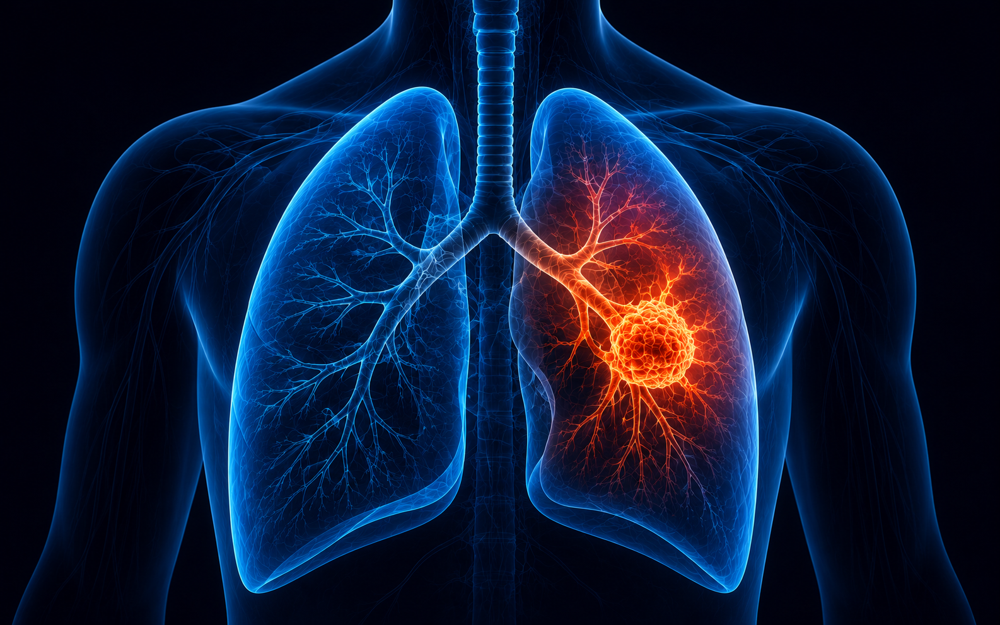
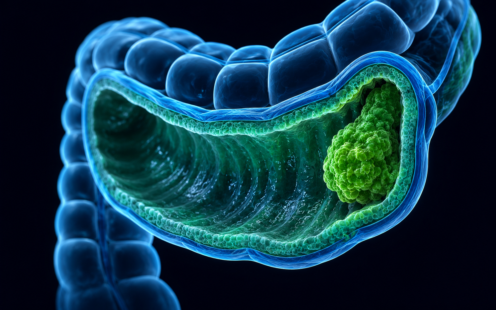
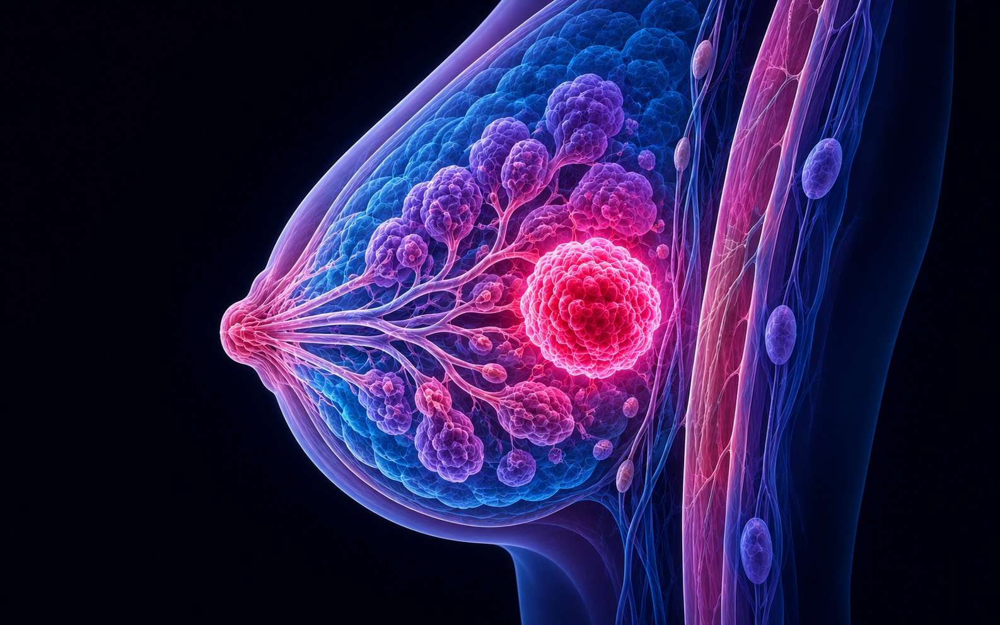

Grupo 1
Sistema Nervioso
Cáncer de referencia: Meningioma · Apartado 10.3.1
Vuestro grupo se especializa en los tumores del sistema nervioso. Estudiad el apartado 10.3.1 y resolved el caso clínico que encontraréis a continuación. Con todo ello, cread una infografía de una sola diapositiva que responda a los 4 puntos indicados más abajo. La presentaréis en clase en 5-10 minutos.
🔬 Caso clínico · Grupo 1
María, 52 años, profesora de instituto.
AntecedentesSin hábitos tóxicos. Sin antecedentes familiares de cáncer.
Motivo de consultaDolores de cabeza frecuentes que empeoran por las mañanas, náuseas y dificultad para concentrarse. Su marido nota que está más irritable.
Exploración y pruebasLeve alteración sensitiva en el lado derecho. Se solicita resonancia magnética (RM) craneal.
HallazgosMasa redondeada, bien delimitada, de 3 cm en zona parietal izquierda, adherida a la duramadre. Sin signos de invasión del tejido cerebral adyacente.
¿Qué debéis resolver?
Identificad el tipo de tumor, justificad si es benigno o maligno, asignad un grado y proponed el tratamiento más adecuado. Incluid todo ello en vuestra infografía.
4 puntos que debe responder vuestra infografía
01
Tipo de tumor e identificación
- ¿Qué es el meningioma? ¿De dónde deriva?
- ¿Es benigno o maligno? Justificad con anaplasia (10.1)
- Relacionad con la tabla de tumores del SNC (10.3.1)
02
Resolución del caso clínico
- Síntomas del caso y por qué aparecen (presión cortical)
- Diagnóstico: RM, hallazgos, confirmación
- Grado tumoral (G) razonado
03
Estadio TNM y tratamiento
- Aplicad TNM: T (3 cm), N0, M0 → estadio
- Tratamiento de elección: cirugía
- Pronóstico esperado
04
Conexión con 10.1 y 10.2
- Anaplasia para justificar el grado
- ¿Benigno = sin metástasis? (10.1.2)
- Algún recurso diagnóstico del 10.2
Conexión con la higiene bucodental
La fenitoína (fármaco antiepiléptico habitual en estos pacientes) puede causar hiperplasia gingival. ¿Cómo lo detectaríais en vuestra consulta? Incluidlo en la infografía.
Cómo se evaluará la actividad
Nota grupal · igual para todas las integrantes del grupo
40%
Contenido de la infografía
30%
Diseño de la infografía
30%
Presentación oral
| Bloque | 1 · Insuficiente | 2 · Suficiente | 3 · Notable | 4 · Excelente |
|---|---|---|---|---|
| Contenido (40%) | Errores graves o puntos sin responder | Responde los 4 puntos con lagunas | Responde correctamente los 4 puntos | Responde con precisión, profundidad y conexión con 10.1/10.2 |
| Diseño (30%) | Desorganizada, ilegible o sobrecargada | Legible pero sin jerarquía visual clara | Clara, organizada y visualmente atractiva | Excelente equilibrio visual, jerarquía clara, impacto inmediato |
| Presentación (30%) | Leen la infografía sin explicar | Explican con apoyo continuo del texto | Explican con fluidez y dominan el contenido | Dominan el tema, conectan ideas y responden con seguridad |
Conversión a nota (0–10): Suma máxima = 12 puntos. Nota = (puntuación / 12) × 10. Ejemplo: 9 puntos → 7,5.

Grupo 2
Sistema Endocrino
Cáncer de referencia: Cáncer de tiroides · Apartado 10.3.2
Vuestro grupo se especializa en los tumores del sistema endocrino. Estudiad el apartado 10.3.2, resolved el caso y cread una infografía de una sola diapositiva que responda a los 4 puntos. Presentación en 5-10 minutos.
🔬 Caso clínico · Grupo 2
Laura, 38 años, administrativa.
AntecedentesSin hábitos tóxicos. Su madre tuvo un problema de tiroides hace años.
Motivo de consultaBulto en la parte delantera del cuello desde hace dos meses. Sin dolor. Leve dificultad para tragar y sensación de presión.
Exploración y pruebasNódulo tiroideo de 2 cm en el lóbulo derecho. TSH normal. Se solicita ecografía cervical y PAAF.
HallazgosNódulo sólido de 2,1 cm con microcalcificaciones. PAAF: células con núcleos en vidrio esmerilado, compatible con carcinoma papilar de tiroides.
¿Qué debéis resolver?Confirmar el diagnóstico, clasificar por grado y TNM, identificar factores de riesgo y proponer el tratamiento.
4 puntos que debe responder vuestra infografía
01
Tipo de tumor e identificación
- ¿Qué es el carcinoma papilar de tiroides?
- Nomenclatura: adenoma (benigno) vs carcinoma (10.1.3)
- ¿Por qué el 85-90% de los tumores de tiroides son benignos?
02
Resolución del caso clínico
- Síntomas (nódulo, disfagia) y su origen
- Pruebas: ecografía, PAAF y hallazgos
- Confirmación diagnóstica: células en vidrio esmerilado
03
Estadio TNM y tratamiento
- TNM: T1 (2,1 cm), N0, M0 → Estadio I
- Tratamiento: tiroidectomía + yodo radiactivo
- Pronóstico: generalmente muy bueno
04
Conexión con 10.1 y 10.2
- Antecedentes familiares → predisposición genética (10.2.3)
- ¿Aplica el screening aquí? (10.2.3)
- Mutación como origen del proceso (10.2.2)
Conexión con la higiene bucodental
Tiroidectomía → hipotiroidismo → macroglosia y xerostomía. Yodo radiactivo → puede afectar a las glándulas salivales. Incluidlo en la infografía.
Cómo se evaluará la actividad
Nota grupal · igual para todas las integrantes del grupo
40%
Contenido de la infografía
30%
Diseño de la infografía
30%
Presentación oral
| Bloque | 1 · Insuficiente | 2 · Suficiente | 3 · Notable | 4 · Excelente |
|---|---|---|---|---|
| Contenido (40%) | Errores graves o puntos sin responder | Responde los 4 puntos con lagunas | Responde correctamente los 4 puntos | Responde con precisión, profundidad y conexión con 10.1/10.2 |
| Diseño (30%) | Desorganizada, ilegible o sobrecargada | Legible pero sin jerarquía visual clara | Clara, organizada y visualmente atractiva | Excelente equilibrio visual, jerarquía clara, impacto inmediato |
| Presentación (30%) | Leen la infografía sin explicar | Explican con apoyo continuo del texto | Explican con fluidez y dominan el contenido | Dominan el tema, conectan ideas y responden con seguridad |
Conversión a nota (0–10): Suma máxima = 12 puntos. Nota = (puntuación / 12) × 10.

Grupo 3
Aparato Urinario
Cáncer de referencia: Cáncer de vejiga · Apartado 10.3.3
Vuestro grupo se especializa en los tumores del aparato urinario. Estudiad el apartado 10.3.3, resolved el caso y cread una infografía de una sola diapositiva que responda a los 4 puntos. Presentación en 5-10 minutos.
🔬 Caso clínico · Grupo 3
Antonio, 65 años, jubilado. Trabajó en una fábrica de pinturas durante 30 años.
AntecedentesFumador de 20 cigarrillos/día durante 40 años. Hipertensión controlada.
Motivo de consultaSangre en la orina (hematuria) de forma intermitente desde hace tres semanas, sin dolor ni fiebre.
Exploración y pruebasExploración normal. Se solicita ecografía abdominal y cistoscopia.
HallazgosMasa de 1,8 cm en la pared de la vejiga. Biopsia: carcinoma urotelial de células transicionales. TC sin afectación ganglionar ni metástasis.
¿Qué debéis resolver?Identificar los factores de riesgo, clasificar el tumor y estadio TNM, y proponer el tratamiento adecuado.
4 puntos que debe responder vuestra infografía
01
Tipo de tumor e identificación
- Carcinoma urotelial de células transicionales
- ¿Por qué la hematuria es el síntoma principal?
- Diferencias cáncer de vejiga vs riñón (10.3.3)
02
Resolución del caso clínico
- Factores de riesgo: tabaco + tóxicos industriales
- Pruebas: ecografía, cistoscopia, biopsia
- Confirmación: carcinoma urotelial
03
Estadio TNM y tratamiento
- TNM: T1 (1,8 cm), N0, M0 → Estadio I
- Tratamiento: resección transuretral + quimio intravesical
- Importancia del diagnóstico precoz
04
Conexión con 10.1 y 10.2
- Clasificad los carcinógenos del caso (10.2.2)
- Poca adherencia celular → capacidad invasiva (10.2.1)
- Marcador BTA del cáncer de vejiga (Doc. 10.1)
Conexión con la higiene bucodental
La quimioterapia puede causar mucositis oral y candidiasis por inmunodepresión. La higienista tiene un papel clave en el seguimiento oral de estos pacientes.
Cómo se evaluará la actividad
Nota grupal · igual para todas las integrantes del grupo
40%
Contenido de la infografía
30%
Diseño de la infografía
30%
Presentación oral
| Bloque | 1 · Insuficiente | 2 · Suficiente | 3 · Notable | 4 · Excelente |
|---|---|---|---|---|
| Contenido (40%) | Errores graves o puntos sin responder | Responde los 4 puntos con lagunas | Responde correctamente los 4 puntos | Responde con precisión, profundidad y conexión con 10.1/10.2 |
| Diseño (30%) | Desorganizada, ilegible o sobrecargada | Legible pero sin jerarquía visual clara | Clara, organizada y visualmente atractiva | Excelente equilibrio visual, jerarquía clara, impacto inmediato |
| Presentación (30%) | Leen la infografía sin explicar | Explican con apoyo continuo del texto | Explican con fluidez y dominan el contenido | Dominan el tema, conectan ideas y responden con seguridad |
Conversión a nota (0–10): Suma máxima = 12 puntos. Nota = (puntuación / 12) × 10.

Grupo 4
Aparato Respiratorio
Cáncer de referencia: Cáncer de pulmón · Apartado 10.3.4
Vuestro grupo se especializa en los tumores del aparato respiratorio. Estudiad el apartado 10.3.4, resolved el caso y cread una infografía de una sola diapositiva que responda a los 4 puntos. Presentación en 5-10 minutos.
🔬 Caso clínico · Grupo 4
Carlos, 58 años, comercial. Fumador de 25 cigarrillos/día desde los 18 años.
AntecedentesBronquitis crónica diagnosticada hace 5 años.
Motivo de consultaTos persistente desde hace dos meses, hemoptisis en varias ocasiones y pérdida de 4 kg en el último mes.
Exploración y pruebasDisminución del murmullo vesicular en el lóbulo superior derecho. TC torácico solicitado.
HallazgosMasa de 3,5 cm en lóbulo superior derecho con ganglio hiliar ipsilateral afectado. Sin metástasis. Biopsia: adenocarcinoma de células no pequeñas.
¿Qué debéis resolver?Identificar factores de riesgo, clasificar el tipo exacto de cáncer de pulmón, aplicar TNM y proponer el tratamiento.
4 puntos que debe responder vuestra infografía
01
Tipo de tumor e identificación
- Adenocarcinoma: tipo no microcítico
- Diferencia microcítico vs no microcítico (10.3.4)
- Tabaquismo: causa en el 95% de los casos
02
Resolución del caso clínico
- Síntomas: hemoptisis, pérdida de peso, tos
- Pruebas: Rx tórax, TC, broncoscopia + biopsia
- Hallazgos: masa 3,5 cm + ganglio hiliar
03
Estadio TNM y tratamiento
- TNM: T2 (3,5 cm), N1 (ganglio hiliar), M0 → Estadio IIB
- Tratamiento: cirugía + quimioterapia/radioterapia
- Pronóstico según estadio
04
Conexión con 10.1 y 10.2
- Tabaco: carcinógeno químico de acción indirecta (10.2.2)
- Pérdida de peso → caquexia neoplásica (10.2.4)
- Angiogénesis tumoral (10.2.2)
Conexión con la higiene bucodental
El tabaco provoca leucoplasias y eritroplasias orales. La higienista puede detectar lesiones premalignas en fumadores y derivarlas a tiempo.
Cómo se evaluará la actividad
Nota grupal · igual para todas las integrantes del grupo
40%
Contenido de la infografía
30%
Diseño de la infografía
30%
Presentación oral
| Bloque | 1 · Insuficiente | 2 · Suficiente | 3 · Notable | 4 · Excelente |
|---|---|---|---|---|
| Contenido (40%) | Errores graves o puntos sin responder | Responde los 4 puntos con lagunas | Responde correctamente los 4 puntos | Responde con precisión, profundidad y conexión con 10.1/10.2 |
| Diseño (30%) | Desorganizada, ilegible o sobrecargada | Legible pero sin jerarquía visual clara | Clara, organizada y visualmente atractiva | Excelente equilibrio visual, jerarquía clara, impacto inmediato |
| Presentación (30%) | Leen la infografía sin explicar | Explican con apoyo continuo del texto | Explican con fluidez y dominan el contenido | Dominan el tema, conectan ideas y responden con seguridad |
Conversión a nota (0–10): Suma máxima = 12 puntos. Nota = (puntuación / 12) × 10.

Grupo 5
Aparato Digestivo
Cáncer de referencia: Cáncer colorrectal · Apartado 10.3.5
Vuestro grupo se especializa en los tumores del aparato digestivo. Estudiad el apartado 10.3.5, resolved el caso y cread una infografía de una sola diapositiva que responda a los 4 puntos. Presentación en 5-10 minutos.
🔬 Caso clínico · Grupo 5
Isabel, 62 años, ama de casa.
AntecedentesSobrepeso. Dieta pobre en fibra y rica en carne roja. Su padre falleció de cáncer de colon a los 70 años.
Motivo de consultaAlternancia de diarrea y estreñimiento, sangre en las heces en varias ocasiones, malestar abdominal y cansancio.
Exploración y pruebasExploración normal. Analítica con anemia ferropénica leve. Se solicita colonoscopia.
HallazgosMasa de 2,5 cm en el colon sigmoide. Biopsia: adenocarcinoma. TC sin afectación ganglionar ni metástasis.
¿Qué debéis resolver?Identificar factores de riesgo, clasificar el tumor por grado y TNM, proponer el tratamiento y reflexionar sobre el screening.
4 puntos que debe responder vuestra infografía
01
Tipo de tumor e identificación
- Adenocarcinoma: el más frecuente del tubo digestivo
- Los 4 cánceres digestivos más frecuentes en España (10.3.5)
- Screening: test de sangre oculta en heces
02
Resolución del caso clínico
- Factores de riesgo: dieta, obesidad, antecedentes familiares
- Síntomas: cambio en deposiciones, sangre, anemia
- Colonoscopia: masa 2,5 cm en colon sigmoide
03
Estadio TNM y tratamiento
- TNM: T2 (pared del colon), N0, M0 → Estadio II
- Tratamiento: cirugía ± quimioterapia
- Diagnóstico precoz: posible antes de síntomas
04
Conexión con 10.1 y 10.2
- Factores de riesgo: ambientales, individuales y genéticos (10.2.3)
- Concepto de screening aplicado (10.2.3)
- Marcador CEA en cáncer colorrectal (Doc. 10.1)
Conexión con la higiene bucodental
El screening colorrectal nos enseña la importancia de la detección precoz. En consulta podéis reforzar la participación en programas de cribado del cáncer oral. La detección precoz salva vidas.
Cómo se evaluará la actividad
Nota grupal · igual para todas las integrantes del grupo
40%
Contenido de la infografía
30%
Diseño de la infografía
30%
Presentación oral
| Bloque | 1 · Insuficiente | 2 · Suficiente | 3 · Notable | 4 · Excelente |
|---|---|---|---|---|
| Contenido (40%) | Errores graves o puntos sin responder | Responde los 4 puntos con lagunas | Responde correctamente los 4 puntos | Responde con precisión, profundidad y conexión con 10.1/10.2 |
| Diseño (30%) | Desorganizada, ilegible o sobrecargada | Legible pero sin jerarquía visual clara | Clara, organizada y visualmente atractiva | Excelente equilibrio visual, jerarquía clara, impacto inmediato |
| Presentación (30%) | Leen la infografía sin explicar | Explican con apoyo continuo del texto | Explican con fluidez y dominan el contenido | Dominan el tema, conectan ideas y responden con seguridad |
Conversión a nota (0–10): Suma máxima = 12 puntos. Nota = (puntuación / 12) × 10.

Grupo 6
Aparato Reproductor
Cáncer de referencia: Cáncer de mama · Apartado 10.3.6
Vuestro grupo se especializa en los tumores del aparato reproductor. Estudiad el apartado 10.3.6, resolved el caso y cread una infografía de una sola diapositiva que responda a los 4 puntos. Presentación en 5-10 minutos.
🔬 Caso clínico · Grupo 6
Elena, 50 años, enfermera.
AntecedentesMenopausia hace 2 años. Sin hábitos tóxicos. Su hermana tuvo cáncer de mama a los 45 años.
Motivo de consultaDurante su revisión ginecológica anual se palpa un nódulo de 1,5 cm en el cuadrante superior externo de la mama derecha, duro e indoloro. Elena no lo había notado.
Exploración y pruebasMamografía: masa espiculada con microcalcificaciones. Ecografía confirma el nódulo. Se realiza biopsia con aguja gruesa (BAG).
HallazgosCarcinoma ductal infiltrante G2, receptores hormonales positivos, HER2 negativo. TC sin ganglios axilares afectados ni metástasis.
¿Qué debéis resolver?Confirmar el diagnóstico, clasificar por grado y TNM, identificar factores de riesgo y proponer el tratamiento adecuado.
4 puntos que debe responder vuestra infografía
01
Tipo de tumor e identificación
- Carcinoma ductal infiltrante G2: el más frecuente
- Diferencia carcinoma ductal vs lobular (10.3.6)
- Fibroadenoma (benigno) vs carcinoma — nomenclatura 10.1.3
02
Resolución del caso clínico
- Factores de riesgo: BRCA, menopausia, edad, antecedentes
- Pruebas: mamografía, ecografía, BAG
- Hallazgos: carcinoma ductal G2, receptores hormonales +
03
Estadio TNM y tratamiento
- TNM: T1 (1,5 cm), N0, M0 → Estadio I
- Tratamiento: cirugía + radioterapia + hormonoterapia
- Pronóstico favorable en estadio I
04
Conexión con 10.1 y 10.2
- Genes BRCA → genes supresores tumorales (10.2.2)
- Marcador CA 15-3 del cáncer de mama (Doc. 10.1)
- Receptores hormonales → base de la hormonoterapia
Conexión con la higiene bucodental
Quimio → mucositis y candidiasis. Radioterapia → xerostomía. Tamoxifeno → sequedad de mucosas. El seguimiento oral de estas pacientes es fundamental.
Cómo se evaluará la actividad
Nota grupal · igual para todas las integrantes del grupo
40%
Contenido de la infografía
30%
Diseño de la infografía
30%
Presentación oral
| Bloque | 1 · Insuficiente | 2 · Suficiente | 3 · Notable | 4 · Excelente |
|---|---|---|---|---|
| Contenido (40%) | Errores graves o puntos sin responder | Responde los 4 puntos con lagunas | Responde correctamente los 4 puntos | Responde con precisión, profundidad y conexión con 10.1/10.2 |
| Diseño (30%) | Desorganizada, ilegible o sobrecargada | Legible pero sin jerarquía visual clara | Clara, organizada y visualmente atractiva | Excelente equilibrio visual, jerarquía clara, impacto inmediato |
| Presentación (30%) | Leen la infografía sin explicar | Explican con apoyo continuo del texto | Explican con fluidez y dominan el contenido | Dominan el tema, conectan ideas y responden con seguridad |
Conversión a nota (0–10): Suma máxima = 12 puntos. Nota = (puntuación / 12) × 10.